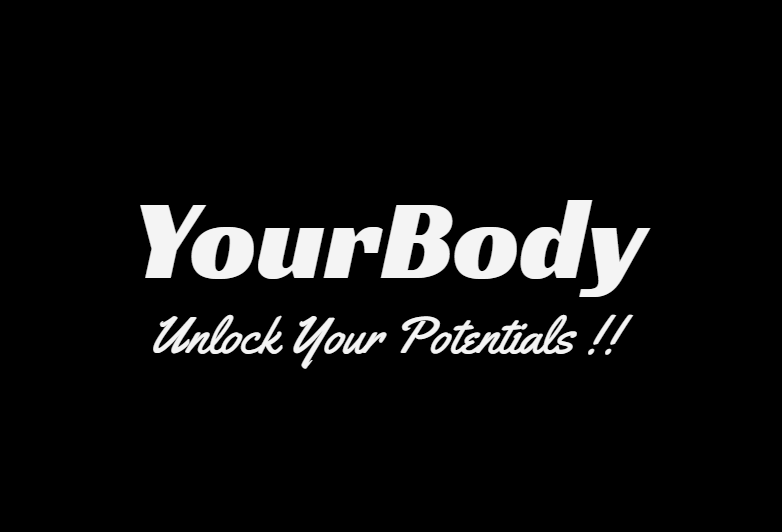

Unlock Your Potential.
What are the health benefits of exercise?
Regular exercise and physical activity may:
-Help you control your weight.
-Along with diet, exercise plays an important role in controlling your weight and preventing obesity.
To maintain your weight, the calories you eat and drink must equal the energy you burn. To lose weight, you must use more calories than you eat and drink.
Reduce your risk of heart diseases. Exercise strengthens your heart and improves your circulation. The increased blood flow raises the oxygen levels in your body. This helps lower your risk of heart diseases such as high cholesterol, coronary artery disease, and heart attack. Regular exercise can also lower your blood pressure and triglyceride levels.
Help your body manage blood sugar and insulin levels. Exercise can lower your blood sugar level and help your insulin work better. This can cut down your risk for metabolic syndrome and type 2 diabetes. And if you already have one of those diseases, exercise can help you to manage it.
Help you quit smoking. Exercise may make it easier to quit smoking by reducing your cravings and withdrawal symptoms. It can also help limit the weight you might gain when you stop smoking.
Improve your mental health and mood. During exercise, your body releases chemicals that can improve your mood and make you feel more relaxed. This can help you deal with stress and reduce your risk of depression.
Emphasizes fruits, vegetables, whole grains, and fat-free or low-fat milk and milk products. Includes a variety of protein foods such as seafood, lean meats and poultry, eggs, legumes (beans and peas), soy products, nuts, and seeds. Is low in added sugars, sodium, saturated fats, trans fats, and cholesterol..
5 Ways to Improve Your Focus During Your Workout -
By: Chris Jakubiak
This post zeros in on focus. The word gets tossed around so much in gyms that it’s almost become a cliché, but focus is the most important tool you can apply to your workout routine.
Focus and attention to detail during a workout is the key to getting better and making long term progress. The more intently you are able to focus, or be mindful on the small details of the exercises (as well as the details of the program), the more you will be able to build success. “The journey of 1000 miles starts with one step.”
You want to make sure each step is purposeful so you stay on track.
1. Eliminate distractions during your workouts.
One important element of Focus is the ability to stay in the present. Eliminate distractions, like reading on the elliptical during your workout. (Better yet—eliminate the elliptical all together!)
Focus on being in the now and what you are doing NOW. Focus on the task at hand and clear your mind from distractions. Don’t get stuck worrying about what happened at work or what you need to do when you get home. Letting your mind drift is a sure fire way to get a shitty workout.
Dedicate this time to yourself and put all your effort into the workout.
2. Focus on yourself and what you’re accomplishing.
This a big part of why many people they feel better after a workout: They are able to put all the crap that happened during the day aside for a time and do work. Focusing on your body and intentionally working on a skill will not only improve the quality of movement and exercise, but it will also help you let go of all the shit you might be dealing with during the day.
If your boss yelled at you or your wife got mad or you feel like your kids don’t appreciate you or whatever, let go of it all and focus your energy on the workout.
You are becoming stronger, physically and mentally, and moving better than the day before if you focus on getting better. You put all the other distractions aside and clear your mind for an hour. It’s time to focus on yourself—to focus on feeling good about what you have done.
3. Treat your workout like a practice.
On a Tim Ferris podcast, he spoke with world famous instructor, Pavel Tsatsouline. What stuck with me most about the conversation was Pavel saying “Treat your workout like a practice.” This is great advice that ties into focus.
People should view each workout as a practice session and each exercise as a skill. Skills require attention and development. “Shutting off” and going through the motions may still increase heart rate, but without focus, you will never see improvement.
Additionally, getting better at a skill is a great way to stay motivated. Lack of motivation (which is always coupled with the failure to see results) is most often the reason people quit before they reach their goals. The focus required to treat a workout as practice will help you see the tangible results of a developing body (whether in form or ability) that fuels the feedback loop of motivation and results.
4. Keep your eye on the prize.
Lastly, the workout should be a means to an end not an end all unto itself. There should be a reason why you are doing what you are doing. Yes, it is important as described above, to stay focused on the workout itself, but not without the framework of an end goal.
In open water swimming, athletes focus on a landmark on the horizon to keep from getting pulled off course. This holds true with your workouts as well—make sure you focus on your long-term goal to keep from getting sidetracked by the ebb and flow of daily pressures, and to ensure you are doing the appropriate work to reach your destination.
For example: A boxing class taught by a legitimate instructor focused on skill development will not only give a “great workout” but will also develop some sport specific boxing skills, which will be tangible, even if you never plan on stepping in a ring.
Compare this to one of those cardio boxing classes taught at one of those big box gyms where the instructor is yelling at everyone and just making people with sloppy form do a bunch of burpees for the sake of doing them.
Which class would you stick with for 6 months or a year?
If you are not focusing on developing skills, you will likely plateau and or lose interest in whatever your initial goal might have been.
5. Start by improving with progressions.
Getting better at exercises like the plank and pushup help you do more work in less time; becoming more efficient, burning more body fat, and building more muscle.
The goal should be to turn your body into a more efficient machine. No one gets better from sloppy form. In the long run sloppy form can hurt your progress.
If you need help getting started, here are some plank and push up progressions to help you get stronger and improve your pushup: These progressions will help you improve in a multitude of areas, and they will make your body stronger and more efficient.
I like them because, if done with mindfulness and focus, they will let you practice practicing by focusing on focus.
BEFORE AND AFTER
The aim of this web app is to create awareness among people about their health and to motivate people to live a healthy life. Here you can check your calories for everthing like for gainig weight, loosing weight etcetra. According to the fifth round of the NFHS conducted between 2019 and 2021, about 6.4 per cent of women and 4.0 per cent of men aged 15-49 are obese. Around 17.6 per cent women and 18.9 per cent men in the same age group are overweight, but not obese. We aim to motivate people and spread awarness about a healthy lifestyle.